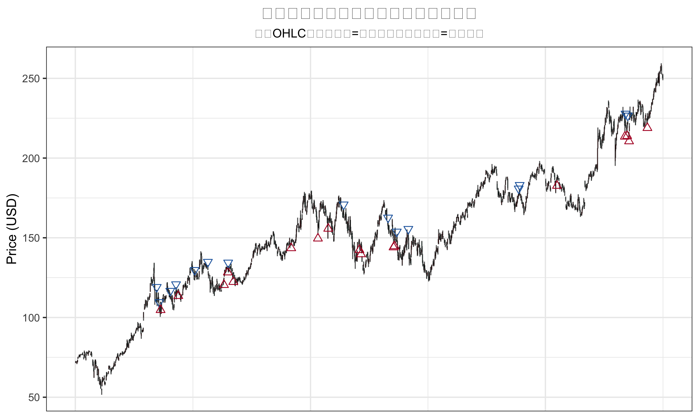

蜡烛图与百分比回撤水平
问题现场
38.2%、50%和61.8%回撤线在图上很容易画，但最难的问题是选择哪一段高低点。如果端点由事后完整行情决定，回撤水平在当时并不存在。本章不争论某个比例是否“神奇”，而是研究端点算法、容差和可用时点。
学习目标
- 用滚动历史高低点定义回撤位置；
- 区分固定端点与事后峰谷；
- 将形态与回撤区域组合；
- 评估比例和容差敏感性；
- 避免多个水平带来的选择偏差。
经典形态与市场机制
百分比回撤把一段价格运动归一化。经典技术分析常观察约1/3、1/2、2/3或斐波那契比例附近的反应。可能机制不是比例本身具有物理力量，而是大量参与者参考相似区间、前期持仓成本与波动尺度，使某些区域更受关注。
回撤线必须与方向结合。以上涨波段为例，价格从高点回落到波幅的一定比例；下跌波段的反弹方向相反。本章使用滚动60日最高最低形成无方向位置指标，作为可复现的最小方案。
可计算定义
定义历史窗口位置：
\[ p_t=\frac{C_t-L_{60,t}}{H_{60,t}-L_{60,t}},\quad 0\le p_t\le1. \]
其中高低点均由截至 \(t\) 的60日窗口产生。若 \(p_t\) 距离0.382、0.500或0.618中的任一水平不超过0.04，则称“邻近回撤区域”。本章把锤子、流星和吞没的净方向与该区域相交。这个定义测量区间位置，不声称端点是完整波段。
研究设计
主实验使用60日窗口、4个百分点容差和三个预设水平。信号仍在收盘后形成。稳健性一：窗口改为40和120日；稳健性二：容差改为0.02和0.06；稳健性三：与随机选择同样数量日期的基准比较。所有九种组合应完整报告，避免只选最好一格。
R实现
features <- lab_features()
levels <- c(0.382, 0.500, 0.618)
distance <- do.call(pmin, lapply(levels, function(level) {
abs(features$range_position_60 - level)
}))
near_level <- distance <= 0.04
raw_signal <- lab_merge_signals(
lab_base_signals()$hammer,
lab_base_signals()$shooting,
lab_base_signals()$engulfing
)
signal_r <- ifelse(near_level, raw_signal, 0)代码保留连续距离变量，阈值化只是研究的一种表达。后续可以直接检验“越接近水平，效应是否单调”，减少武断切点。
Python实现
import numpy as np
from python.candlestick_lab import load_data, pattern_signal
panel = load_data()
high_60 = panel["high"].rolling(60).max()
low_60 = panel["low"].rolling(60).min()
position = (panel["close"] - low_60) / (high_60 - low_60)
distance = np.minimum.reduce([abs(position - x) for x in (0.382, 0.5, 0.618)])
raw = np.sign(
pattern_signal("hammer").to_numpy()
+ pattern_signal("shooting").to_numpy()
+ pattern_signal("engulfing").to_numpy()
)
signal_py = np.where(distance <= 0.04, raw, 0)R与Python都在全样本滚动后再筛选日期。若先截取图中区间，窗口开头会失去必要历史。
图形诊断

图形仅用于检查端点是否合理和水平是否频繁跳动。滚动高低改变时，位置指标会不连续；这不是数据错误，而是定义的结果。
证据与稳健性
| sample | events | mean_gross | mean_net | win_rate | ci_low | ci_high |
|---|---|---|---|---|---|---|
| 全部事件 | 84 | -3e-04 | -0.0013 | 0.5000 | -0.0094 | 0.0068 |
| 非重叠事件 | 68 | 1e-03 | 0.0000 | 0.5147 | -0.0092 | 0.0093 |

当前结果必须与未过滤形态对照，既比较均值，也比较事件减少后的区间。参数网格应画成完整热力图；若某个孤立比例最好而相邻比例无效，通常更像噪声。比例研究还应与等距水平或随机水平基准比较。
AI协作实验室
AI生成窗口×容差的参数网格和完整结果表，并检查每个端点的最晚数据日期。约束是不得删除表现差的组合。验收要求样本量随容差放宽大体不减，窗口前59日位置为缺失，所有信号日期都能由当时窗口重算。
失效条件与常见误区
- 用事后完整波段的最高最低回填历史；
- 在多个比例中只展示最佳一个；
- 把水平画成精确单点而无容差；
- 忽略滚动端点变化造成的位置跳跃；
- 不与普通等距水平或随机基准比较。
本章小结与练习
百分比回撤的可研究性来自端点、比例和容差的明确化。它是位置变量，不是自然定律。
- 计算40、60、120日窗口下的信号数量。
- 比较斐波那契水平与0.25、0.50、0.75等距水平。
- 构造一个事后峰谷回填导致虚假精确的示例。
进入下一章前，请确认你能证明回撤端点在信号时刻可用，并能完整报告参数网格而不是单一最佳值。